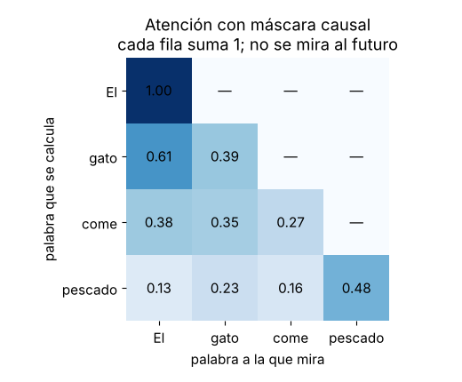

UD4 · Procesamiento del lenguaje natural
Cómo una máquina lee, escucha, compara y genera lenguaje humano: del texto convertido en números a los grandes modelos de lenguaje, sus límites y su impacto en lenguas como el gallego.
Libro de referencia: J. F. Puentes Calvo, Tecnologías Inteligentes (2025), capítulos 8–13. Orden de las unidades: sigue la programación oficial 2026/27 y el libro (lenguaje después de visión). En materiales anteriores esta unidad aparece como UD3.
Requisitos: cadenas, listas y diccionarios de la UD2 (E8, E10, E16). Casi todo el código funciona sin instalar nada más que scikit-learn; los modelos de Hugging Face necesitan Colab e internet.
| Sesiones | Bloque | Libro | Criterio |
|---|---|---|---|
| 1–2 | ¿Qué es el PLN? Ambigüedad y apertura «hablar sin decir nada» | 12.1, 13 | — |
| 3–5 | Codificar datos: números, texto (ASCII, Unicode), sonido | 8.1–8.4 | CA4.1 |
| 6–8 | Tokenización, normalización, stop words, stemming y lematización | 8.5, 11.2 | CA4.2 |
| 9–11 | Del texto al vector: bolsa de palabras, TF-IDF, embeddings | 8.6, 10.1 | CA4.2 |
| 12–13 | Similitud entre textos: Jaccard, Dice, coseno; plagio | 10 | CA4.2 |
| 14–16 | Clasificación de textos y análisis de sentimientos | 11 | CA4.2, CA4.3 |
| 17–18 | Voz: reconocimiento, síntesis y transcripción | 9 | CA4.1, CA4.3 |
| 19–21 | Modelos de lenguaje: cómo funcionan, prompting y verificación | 12 | CA4.4, CA4.5 |
| 22 | Impacto social y lenguas minoritarias | 13 | CA4.5 |
| 23–25 | Proyecto de PLN y exposición | — | CA4.6 |
| Ampliación | Regex, n-gramas, word2vec, POS, NER, sintaxis, RNN/LSTM, Transformers | 8, 10, 12 | — |
1. ¿Qué es el procesamiento del lenguaje natural?
El PLN (NLP en inglés) es la rama de la IA que permite a las máquinas entender, interpretar y generar lenguaje humano, escrito o hablado. Lo usas a diario: el teclado predictivo, el filtro antispam, los traductores, los asistentes de voz, los subtítulos automáticos, los chatbots.
Por qué es difícil:
- Ambigüedad: «Vi a Marta con el telescopio» (¿quién tiene el telescopio?), «banco» (asiento o entidad financiera).
- Contexto: «está fresco» puede ser el pescado, el tiempo o una persona descarada.
- Ironía y sarcasmo: «¡Genial, otra vez lloviendo!».
- Variación: faltas de ortografía, abreviaturas («q», «xq»), emojis, mezcla de idiomas (gallego y castellano en la misma frase).
Entender y generar. El PLN tiene dos caras:
- Comprensión (NLU, natural language understanding): pasar del texto a su significado. Detectar la intención, extraer datos, clasificar.
- Generación (NLG, natural language generation): producir texto correcto y natural. Una respuesta, un resumen, una explicación.
Un asistente que recibe «O meu pedido aínda non chegou, podes miralo?» hace las dos cosas: comprende la intención («consultar el estado de un pedido») y genera una respuesta útil.
Tres tipos de ambigüedad, que el sistema tiene que resolver:
| Tipo | Qué ocurre | Ejemplo | Lecturas posibles |
|---|---|---|---|
| Léxica | Una palabra tiene varios significados | «Sentouse no banco» | Asiento · entidad financiera |
| Sintáctica | La frase admite dos estructuras | «Vi a Marta con el telescopio» | Yo uso el telescopio · Marta lo lleva |
| Referencial | No está claro a quién se refiere un pronombre | «Ana riñó a Lúa porque llegó tarde» | Llegó tarde Ana · llegó tarde Lúa |
Un matiz que confunden muchos apuntes: en «banco» los dos significados no tienen relación entre sí; es una homonimia. Cuando los significados sí están relacionados («la pata de la mesa» y «la pata del perro»), se llama polisemia. Para la máquina el problema es el mismo: elegir el significado por el contexto.
Tres enfoques en la historia: reglas escritas a mano → modelos estadísticos (contar palabras y n-gramas) → redes neuronales y Transformers, la base de los modelos de lenguaje actuales.
| Reglas | Estadístico | Neuronal | |
|---|---|---|---|
| El conocimiento viene de… | personas expertas que escriben reglas | probabilidades contadas en textos | representaciones que aprende una red |
| Datos necesarios | Pocos | Bastantes | Muchísimos |
| Ventaja | Se entiende y es precisa en su terreno | Sencillo y eficaz | Capta el contexto y es el más preciso |
| Inconveniente | Rígida; cuesta ampliarla | Mira poco contexto | Necesita muchos datos; difícil de explicar |
| Ejemplo | Corrector con reglas gramaticales | Teclado predictivo con n-gramas (sección 10.5) | Traductor o chatbot con Transformers |
Los sistemas reales suelen combinar los tres: por ejemplo, reglas para detectar fechas y una red para entender la intención.
Ejercicio 1.1 · Hablar 10 minutos sin decir nada 🟢 (reto 12.1 del libro)
Por parejas, uno habla un minuto sobre un tema cualquiera sin aportar ninguna información real, solo con frases bien construidas. ¿Es fácil? ¿Qué demuestra?
2. Codificar datos: números, texto y sonido
Un ordenador solo guarda bits. Todo lo demás es una convención para interpretarlos:
- Números enteros: en binario; los negativos, con
complemento a dos. Decimales: coma
flotante IEEE 754 (por eso
0.1 + 0.2da0.30000000000000004). - Escalares, vectores, matrices y tensores: un número, una lista, una tabla, una «tabla de tablas». Una frase codificada es un vector; un lote de frases, una matriz; un lote de imágenes en color, un tensor de 4 dimensiones.
- Texto: cada carácter tiene un número. ASCII (7 bits) solo cubre el inglés; Unicode asigna un número a cada carácter de todas las lenguas y emojis, y UTF-8 lo guarda en 1 a 4 bytes.
- Sonido: una onda de presión con frecuencia (tono, en Hz) y amplitud (volumen). Para digitalizarla se muestrea: se mide su valor muchas veces por segundo (44 100 en un CD) y cada medida se guarda con un número de bits (16 en un CD).
texto = "Hola mundo, ¡olá mundo!"
print([ord(c) for c in texto]) # 72 111 108 97 ... 225 (á)
print(list(texto.encode("utf-8"))) # la á ocupa dos bytes: 195 161
print(0.1 + 0.2) # 0.30000000000000004
print(bin(13), int("1101", 2)) # '0b1101' 13Ejercicio 2.1 · ¿Cuánto ocupa un minuto de audio? 🟢 (CA4.1)
Calcula el tamaño de 1 minuto de audio estéreo con calidad de CD (44 100 muestras/s, 16 bits). ¿Por qué un MP3 de 1 minuto ocupa unos 1 MB?
Ejercicio 2.2 · Una onda en Python 🟡
Genera un segundo de un La (440 Hz) muestreado a 8000 Hz, dibuja los primeros 10 ms y explica qué pasaría con una frecuencia de muestreo de 600 Hz.
3. Tokenización y preprocesado
Tokenizar es dividir un texto en unidades (tokens). Estrategias:
Para verlo: en Tiktokenizer se escribe un texto y se ve cómo lo trocean los tokenizadores de OpenAI, con cada token en un color y el total. Prueba la misma frase en inglés, castellano y gallego y compara cuántos tokens salen: es una de las razones por las que usar un modelo en gallego puede costar más (teoría 14.8).
| Estrategia | Ejemplo con «desordenadamente» | Ventajas e inconvenientes |
|---|---|---|
| Por palabras | desordenadamente |
Intuitiva; vocabulario enorme, no sabe qué hacer con palabras nuevas |
| Por caracteres | d e s o r d e n… |
Vocabulario mínimo; secuencias muy largas y sin significado |
| Por subpalabras | des · orden · ada · mente |
El término medio que usan los LLM (BPE, WordPiece) |
Preprocesado habitual: pasar a minúsculas; quitar signos; quitar palabras vacías (stop words: el, la, de, que…), que son muy frecuentes y aportan poco; y reducir variantes de una palabra:
- Stemming: cortar la terminación con reglas. «corriendo», «corrió» → «corr». Rápido pero tosco.
- Lematización: llevar a la forma de diccionario. «corriendo», «corrió» → «correr». Más preciso, necesita un diccionario o un modelo (spaCy).
import re
texto = "El Dr. Pérez llegó a las 9.30 a A Coruña. ¡Qué día! ¿Vienes mañana?"
print(texto.split()) # ['El', 'Dr.', ..., 'Coruña.', '¡Qué', 'día!', ...]
print(re.findall(r"\w+", texto.lower())) # ['el', 'dr', 'pérez', 'llegó', ..., '9', '30', ...]
print(re.split(r"(?<=[.!?])\s+", texto)) # ['El Dr.', 'Pérez llegó ...', '¡Qué día!', '¿Vienes mañana?']La última línea intenta separar frases cortando tras cada punto, y falla con «Dr.» (reto 8.6 del libro). Las librerías de PLN (spaCy, NLTK) tienen listas de abreviaturas y modelos para resolverlo.
¿Basta con una lista de abreviaturas? Casi, pero no del todo:
ABREVIATURAS = {"dr.", "sr.", "sra.", "p.m.", "a.m.", "etc."}
def frases(texto):
resultado, actual = [], []
for palabra in texto.split():
actual.append(palabra)
if palabra[-1] in ".!?" and palabra.lower() not in ABREVIATURAS: # fin de frase
resultado.append(" ".join(actual))
actual = []
if actual:
resultado.append(" ".join(actual))
return resultado
print(frases("O Dr. Pérez chegou tarde. Marchou cedo."))
# ['O Dr. Pérez chegou tarde.', 'Marchou cedo.'] ✔ «Dr.» ya no corta
print(frases("O Dr. Pérez chegou ás 5 p.m. Marchou cedo."))
# ['O Dr. Pérez chegou ás 5 p.m. Marchou cedo.'] ✘ aquí «p.m.» SÍ cerraba la fraseUna abreviatura puede estar en medio o al final de una frase, y una regla fija no lo distingue. Hay que mirar el contexto (¿la palabra siguiente empieza por mayúscula?, ¿es un nombre propio?). Por eso los separadores de frases modernos son modelos entrenados, no solo listas.
Posiciones de los tokens (offsets). Al
tokenizar conviene guardar dónde estaba cada token en
el texto original: su carácter de inicio y su carácter de fin. Se
escribe [inicio, fin), con el inicio incluido y el fin excluido, igual
que en las porciones de Python (texto[inicio:fin]). Así se
puede, por ejemplo, subrayar en el texto original la entidad que ha
detectado un modelo de NER (sección 10.6).
import re
texto = "Ola, Uxía!"
for m in re.finditer(r"\w+|[^\w\s]", texto): # palabras o signos sueltos
print(f"{m.group():<5} [{m.start()}, {m.end()})")
# Ola [0, 3)
# , [3, 4)
# Uxía [5, 9)
# ! [9, 10)
print(texto[5:9]) # 'Uxía': la posición permite recuperar el tokenCon spaCy (en Colab: pip install spacy y
python -m spacy download es_core_news_sm):
import spacy
nlp = spacy.load("es_core_news_sm")
doc = nlp("Los alumnos estaban corriendo hacia las aulas nuevas")
for t in doc:
print(f"{t.text:<10} lema={t.lemma_:<8} tipo={t.pos_}")Ejercicio 3.1 · Limpiar un mensaje 🟡
Escribe limpiar(texto) que pase a minúsculas, quite
enlaces, menciones (@usuario) y signos, y elimine palabras
vacías. Pruébala con «@ana Mañana NO hay clase!!! 😃 mira https://edu.xunta.gal».
4. Del texto al vector
Los modelos solo trabajan con números. Si numeramos las palabras (casa = 1, perro = 2, gato = 3), introducimos un orden falso: parecería que gato está «más cerca» de perro que de casa por el número. Soluciones:
- One-hot: un vector con tantas posiciones como palabras del vocabulario, todo ceros salvo un 1 en la de la palabra. Sin orden falso, pero enorme y sin noción de significado.
- Bolsa de palabras (BoW): un vector por documento que cuenta cuántas veces aparece cada palabra. Pierde el orden («el perro muerde al hombre» = «el hombre muerde al perro»).
- TF-IDF: como BoW, pero cada palabra pesa más si es frecuente en ese documento (TF) y rara en el conjunto (IDF, idea de Karen Spärck Jones). Las palabras que salen en todas partes casi no cuentan.
- Embeddings: vectores densos (de cientos de números) aprendidos por una red, donde las palabras o frases de significado parecido quedan cerca. Con word2vec se puede hacer «rey − hombre + mujer ≈ reina».
from sklearn.feature_extraction.text import CountVectorizer, TfidfVectorizer
from sklearn.metrics.pairwise import cosine_similarity
docs = ["El Titanic se hundió en 1912 tras chocar con un iceberg en el Atlántico.",
"En 1912 el Titanic chocó con un iceberg y se hundió en el océano Atlántico.",
"Subir al Aneto requiere crampones, piolet y buena forma física."]
bow = CountVectorizer().fit(docs)
print(len(bow.get_feature_names_out()), "palabras de vocabulario") # 23
T = TfidfVectorizer().fit_transform(docs)
print(cosine_similarity(T).round(2))
# [[1. 0.82 0. ]
# [0.82 1. 0. ]
# [0. 0. 1. ]]Los dos textos del Titanic se parecen (0,82); el de montaña no comparte nada con ellos (0). Es la práctica del capítulo 10 del libro.
Ejercicio 4.1 · TF-IDF a mano 🔴
Tres documentos: d1 = «gato negro», d2 = «gato blanco», d3 = «perro negro». Calcula el TF-IDF de «gato» y de «blanco» en d2 con TF = apariciones / palabras del documento e IDF = log(N / documentos que contienen la palabra).
5. Similitud entre textos
| Medida | Fórmula | Rango | Idea |
|---|---|---|---|
| Jaccard | |A ∩ B| / |A ∪ B| | 0–1 | Palabras compartidas entre todas las palabras distintas |
| Dice | 2 · |A ∩ B| / (|A| + |B|) | 0–1 | Parecido a Jaccard, premia más las coincidencias |
| Coseno | a · b / (|a| · |b|) | 0–1 con conteos | Ángulo entre los vectores (BoW, TF-IDF o embeddings) |
| Euclídea | √Σ(aᵢ − bᵢ)² | 0–∞ | Distancia «en línea recta»; depende de la longitud del texto |
import re
VACIAS = {"el", "la", "los", "las", "de", "del", "y", "a", "en", "que", "un", "una",
"se", "con", "por", "su", "al", "es", "fue", "o", "lo"}
def tokens(t):
return [p for p in re.findall(r"\w+", t.lower()) if p not in VACIAS]
def jaccard(a, b):
A, B = set(tokens(a)), set(tokens(b))
return len(A & B) / len(A | B)
def dice(a, b):
A, B = set(tokens(a)), set(tokens(b))
return 2 * len(A & B) / (len(A) + len(B))
t1 = "El Titanic se hundió en 1912 tras chocar con un iceberg en el Atlántico."
t2 = "En 1912 el Titanic chocó con un iceberg y se hundió en el océano Atlántico."
print(sorted(set(tokens(t1)) & set(tokens(t2)))) # ['1912', 'atlántico', 'hundió', 'iceberg', 'titanic']
print(f"{jaccard(t1, t2):.2f} {dice(t1, t2):.2f}") # 0.56 0.71«chocar» y «chocó» cuentan como palabras distintas: con lematización la similitud subiría. Y dos frases con el mismo significado y palabras distintas («el barco se fue a pique») darían 0: para eso están los embeddings.
Ejercicio 5.1 · Jaccard a mano 🟡 (reto 10.2, tarea)
Calcula a mano, sin palabras vacías, la similitud de Jaccard entre «A IA aprende con datos de calidade» y «Os datos de calidade melloran a IA». Comprueba después con el código.
6. Clasificar textos y analizar sentimientos
Clasificar textos es asignar una categoría: spam o no spam, tema de una noticia, idioma, sentimiento. El pipeline siempre es el mismo: preprocesar → vectorizar (TF-IDF) → clasificador → evaluar.
from sklearn.feature_extraction.text import TfidfVectorizer
from sklearn.naive_bayes import MultinomialNB
from sklearn.pipeline import make_pipeline
textos = [
"gana un iphone gratis haz clic ya", "oferta exclusiva premio en metálico pulsa aquí",
"has sido seleccionado para un premio", "descuento del 90 por ciento solo hoy compra ya",
"tu cuenta ha sido bloqueada verifica tus datos", "consigue dinero fácil desde casa",
"mañana hay examen de tecnología", "te paso los apuntes de la ud2",
"quedamos a las cinco en la biblioteca", "la reunión de padres es el jueves",
"¿has hecho los ejercicios de pandas?", "recuerda traer el portátil a clase",
]
etiquetas = ["spam"] * 6 + ["ham"] * 6
modelo = make_pipeline(TfidfVectorizer(), MultinomialNB()).fit(textos, etiquetas)
print(modelo.predict(["premio gratis pulsa aquí", "mañana traigo los apuntes", "verifica tu cuenta hoy"]))
# ['spam' 'ham' 'spam']Naive Bayes calcula la probabilidad de cada clase multiplicando las probabilidades de sus palabras («gratis» es mucho más probable en spam). Es «ingenuo» porque supone que las palabras son independientes, pero funciona muy bien con texto. Con 12 ejemplos el modelo es de juguete: los reales se entrenan con miles (por ejemplo, el SMS Spam Collection de UCI).
Análisis de sentimientos: clasificar en positivo, negativo o neutro. Dos enfoques:
- Por reglas (léxico): una lista de palabras con +1 o −1 y reglas para las negaciones. Transparente, pero frágil.
- Por aprendizaje: un modelo entrenado con frases etiquetadas; hoy, Transformers ya entrenados.
import re
POSITIVAS = {"bueno", "buena", "genial", "excelente", "encanta", "increíble", "divertida", "recomiendo"}
NEGATIVAS = {"malo", "mala", "aburrida", "horrible", "odio", "lenta", "peor", "decepción"}
NEGADORES = {"no", "nunca", "nada", "ni"}
def sentimiento(texto):
palabras = re.findall(r"\w+", texto.lower())
puntos = 0
for i, p in enumerate(palabras):
valor = (p in POSITIVAS) - (p in NEGATIVAS)
if NEGADORES & set(palabras[max(0, i - 2):i]): # «no es buena»
valor = -valor
puntos += valor
return "POS" if puntos > 0 else "NEG" if puntos < 0 else "NEU"
for f in ["Una película genial, la recomiendo", "Lenta y aburrida", "No es buena",
"Genial, otra vez dos horas de anuncios 🙃"]:
print(sentimiento(f), f) # POS · NEG · NEG · POS (¡la ironía lo engaña!)Con un modelo preentrenado (Colab):
from transformers import pipeline
analizador = pipeline("sentiment-analysis", model="pysentimiento/robertuito-sentiment-analysis")
print(analizador(["Me encantó la peli", "Vaya rollo de clase", "Mañana es martes"]))
# etiquetas POS / NEG / NEU con su puntuaciónEjercicio 6.1 · Engañar al analizador 🟡 (retos 11.2–11.3, tarea)
Escribe 6 frases: positiva, negativa, neutra, con negación, con ironía y solo con emojis. Pásalas por el analizador por reglas y por el de Transformers. Haz una tabla con lo esperado, lo predicho y una explicación de cada fallo.
Ejercicio 6.2 · Detective de idiomas 🔴 (reto 8.9, tarea)
¿Se puede adivinar el idioma de un texto solo por la frecuencia de sus bigramas (pares de letras)? Construye un perfil de gallego, castellano, portugués e inglés con un párrafo de cada uno y prueba con frases nuevas.
7. Voz: de audio a texto y de texto a audio
- Reconocimiento de voz (ASR): el audio se convierte en un espectrograma (cómo se reparte la energía entre frecuencias a lo largo del tiempo) y una red lo transcribe. Modelos actuales como Whisper son multilingües y funcionan también en gallego.
- Síntesis de voz (TTS): históricamente por concatenación de trozos grabados o por formantes (simulando el tracto vocal); hoy con redes neuronales que suenan casi humanas. Para gallego existen voces sintéticas desarrolladas por el proyecto Nós.
# Colab: transcribir un audio con Whisper
from transformers import pipeline
asr = pipeline("automatic-speech-recognition", model="openai/whisper-small")
print(asr("mi_audio.mp3", generate_kwargs={"language": "galician"})["text"])Ejercicio 7.1 · Transcripción con ruido 🟡 (retos 9.3 y 9.6, tarea)
Graba la misma frase en silencio, con música, en el patio y hablando muy rápido. Inclúyela en gallego y con palabras difíciles (topónimos, gheada). Haz una tabla con los errores en cada caso.
8. Modelos de lenguaje
Un modelo de lenguaje asigna probabilidades a la siguiente palabra (token) dado el texto anterior. Evolución: reglas → n-gramas (contar qué palabra sigue a cada par de palabras) → redes recurrentes → Transformers (2017), que con el mecanismo de atención relacionan cada palabra con todas las demás del contexto.
Un LLM en una hoja
Del prompt a la respuesta, con el ejemplo «¿Cantos días teño para devolver un libro?». Los detalles, en la sección 10.10.
Del prompt a la respuesta, token a token
El modelo nunca escribe la respuesta de golpe: da la vuelta al circuito una vez por cada token.
Logits → probabilidades: lo que cambia la temperatura
Logits 2, 1 y 0 para «15», «30» y «7». La temperatura cambia lo aleatorio de la elección, no lo verdadero de la respuesta.
De texto a asistente
- Preentrenamientopredecir el siguiente token en billones de tokens de texto pesos cambian
- Ajuste supervisado (SFT)ejemplos de pregunta → buena respuesta pesos cambian
- Preferencias (RLHF, DPO)entre dos respuestas, cuál es mejor pesos cambian
- Uso (inferencia)responde a tu conversación pesos fijos
Prefill, decode y caché KV
Sin caché, cada paso recalcularía K y V de todo el texto. El resultado es el mismo; el trabajo, no.
No confundir
- Parámetros
- los pesos que se aprenden al entrenar
- Ajustes de generación
- temperatura, top-p, longitud: los eliges al usarlo
- Ventana de contexto
- lo que el modelo ve en esta respuesta; no es memoria permanente
- Caché KV
- reutiliza cálculos dentro de una respuesta
- Caché de respuestas
- guarda respuestas enteras; la monta la aplicación
- Probabilidad
- lo frecuente en los textos de entrenamiento, no lo verdadero

- LLM (Large Language Model): Transformers con miles de millones de parámetros entrenados con corpus gigantescos. A partir de cierto tamaño aparecen propiedades emergentes: resumir, traducir o razonar sin haber sido entrenados específicamente para ello.
- Encoder (BERT): entiende textos, útil para clasificar y para embeddings. Decoder (GPT): genera texto. Encoder-decoder (T5): traducir o resumir.
- Cómo funciona un chat: al pulsar Enter, el modelo recibe un contexto inicial oculto (instrucciones y personaje), todo el historial de la conversación y la pregunta nueva, y genera la continuación token a token.
- Decodificación: elegir siempre el token más probable (greedy) da textos repetitivos; muestrear con una temperatura da variedad (baja = predecible, alta = creativa e incoherente).
- Limitaciones: alucinaciones (inventa datos con total seguridad), sesgos del corpus, fecha de corte del conocimiento, no cita fuentes de forma fiable. Siempre hay que verificar.
Técnicas de prompting: dar rol y contexto, indicar el formato de salida, poner ejemplos (few-shot), pedir que razone paso a paso, pedir que diga «no lo sé» si no está seguro, y pedir fuentes que luego compruebas.
Salida estructurada: comprobar el formato con Pydantic. Cuando un programa usa la respuesta de un LLM (para guardarla en una tabla, por ejemplo), se le pide que responda en JSON con unos campos fijos. Pero el modelo puede equivocarse: inventar un valor, salirse de un rango u olvidar un campo. La librería Pydantic (ver Análisis de datos 1.5) comprueba la respuesta antes de usarla:
from typing import Literal
from pydantic import BaseModel, Field, ValidationError
class Resumen(BaseModel): # el formato que le pedimos al modelo
titulo: str
sentimiento: Literal["positivo", "negativo", "neutro"]
confianza: float = Field(ge=0, le=1)
palabras_clave: list[str] = Field(max_length=5)
buena = '{"titulo": "Crítica da película", "sentimiento": "positivo", "confianza": 0.9, "palabras_clave": ["cine", "galego"]}'
print(Resumen.model_validate_json(buena)) # se acepta: ya es un objeto con sus campos
mala = '{"titulo": "Crítica", "sentimiento": "moi bo", "confianza": 1.5}'
try:
Resumen.model_validate_json(mala)
except ValidationError as e:
for err in e.errors():
print(err["loc"][0], "->", err["msg"])
# sentimiento -> Input should be 'positivo', 'negativo' or 'neutro'
# confianza -> Input should be less than or equal to 1
# palabras_clave -> Field requiredSi la respuesta no pasa, el programa puede pedirla otra vez o avisar
a una persona en lugar de guardar datos erróneos. Muchas APIs de modelos
aceptan directamente la ficha de Pydantic
(Resumen.model_json_schema()) para forzar ese formato. Ojo:
Pydantic comprueba la forma, no la
verdad. Un JSON perfecto puede contener un dato
inventado, así que la verificación con fuentes del ejercicio 8.2 sigue
siendo necesaria.
Ejercicio 8.1 · Un generador de texto con bigramas 🟡
Programa un «mini modelo de lenguaje»: cuenta qué palabra sigue a cada palabra en un texto y genera frases eligiendo la siguiente al azar según esas frecuencias.
Ejercicio 8.2 · Cuaderno de verificación 🟡 (CA4.4, CA4.5, tarea)
Haz 5 preguntas a una IA (una de historia local, una de ciencias, una de actualidad, una con trampa y un cálculo). Contrasta cada respuesta con dos fuentes y clasifícala como correcta, imprecisa o inventada. Repite la peor con una técnica de prompting que la mejore.
Ejercicio 8.3 · El «chat barato» del instituto 🔴 (práctica 12.5 del libro)
Un asistente que no genera texto: busca entre preguntas frecuentes la más parecida a la consulta y devuelve su respuesta.
9. Impacto social del PLN
- Lenguas con menos recursos: los modelos aprenden de lo que hay en internet, y hay mucho más inglés que gallego. Resultado: peor calidad, errores de normativa y castellanismos, y riesgo de que la tecnología arrincone a las lenguas minorizadas. Iniciativas como el Proxecto Nós (CiTIUS, Universidade de Santiago) crean corpus, traductores, voces y modelos para el gallego.
- Desinformación y textos generados a escala; suplantación con clonación de voz.
- Detección de texto generado por IA: los detectores fallan mucho y castigan injustamente a quien escribe en una lengua que no es la suya. No son prueba suficiente de nada.
- Empleo: traducción, atención al cliente, redacción.
- Privacidad: lo que escribes en un chatbot puede usarse para entrenar.
Ejercicio 9.1 · Debate a dos bandos 🟡 (cap. 13)
«Los LLM salvarán al gallego» frente a «los LLM acelerarán su retroceso». Cada bando, tres argumentos con fuentes.
10. Ampliación: técnicas clásicas y modelos neuronales
Esta sección amplía la unidad con las técnicas que aparecen en casi todos los temarios de PLN: expresiones regulares, n-gramas, embeddings, etiquetado gramatical, análisis sintáctico, redes secuenciales y Transformers. Es material de ampliación para quien quiera ir más allá: los mínimos de la unidad están en las secciones 1–9.
Aviso sobre las fuentes. Circulan por redes muchos «apuntes a mano» de PLN generados con IA. Son útiles como mapa del tema, pero pueden tener errores: el ejercicio 10.1 analiza uno real. Como siempre en esta materia, todo se comprueba.
10.1 Los niveles del lenguaje
Un sistema de PLN analiza el texto en capas, de la más superficial a la más profunda:
| Nivel | Qué estudia | Técnica típica | Ejemplo |
|---|---|---|---|
| Morfológico | Cómo se forma cada palabra con sus piezas (morfemas) | Análisis morfológico, stemming | «in-feliz-mente» · «rapaz-a-s» |
| Léxico | Las palabras y sus formas | Tokenización, lematización | «corrían» → «correr» |
| Sintáctico | Cómo se organizan las palabras en la frase | Etiquetado gramatical, análisis sintáctico | ¿Quién es el sujeto? |
| Semántico | El significado de palabras y frases | Embeddings, desambiguación | «banco» de sentarse o de dinero |
| Discursivo | Las relaciones entre frases | Resolución de correferencias | «Uxía llegó tarde. Ella perdió el bus» |
| Pragmático | La intención según el contexto | Detección de ironía e intención | «¡Qué puntual!» a quien llega tarde |
Cuanto más profundo es el nivel, más difícil: los modelos actuales resuelven bien el léxico y el sintáctico, pero aún fallan con frecuencia en el pragmático.
El flujo de trabajo de casi cualquier proyecto de PLN: texto → limpieza → tokenización → normalización → representación numérica (BoW, TF-IDF, embeddings) → modelo → evaluación → despliegue.
Con un filtro de spam:
- Texto: «¡Gana un iPhone gratis! Reclámalo ya».
- Preprocesado: «gana iphone gratis reclamalo ya».
- Representación: un vector TF-IDF.
- Modelo: un clasificador (Naive Bayes, sección 6) aprende de correos ya etiquetados.
- Evaluación: con correos que no vio al entrenar. Si de 1000 correos se usan 800 para entrenar y 200 para probar, y acierta 192 de esos 200, su exactitud es 192/200 = 0,96. Como hay muchos menos correos de spam que normales, hay que mirar también la precisión y la exhaustividad (UD5, sección 5).
- Despliegue: el modelo se integra en el correo y filtra los mensajes nuevos.
10.2 Expresiones regulares y normalización
Una expresión regular (regex) es un patrón que describe un tipo de texto. Sirve para buscar, extraer o sustituir: correos, fechas, enlaces, números de teléfono…
| Patrón | Significa | Patrón | Significa |
|---|---|---|---|
\d |
un dígito | + |
una o más veces |
\w |
letra, dígito o _ |
* |
cero o más veces |
\s |
espacio, tabulador o salto | ? |
opcional |
. |
cualquier carácter | {2,4} |
entre 2 y 4 veces |
[a-z] |
uno de ese conjunto | ^ / $ |
inicio / fin del texto |
import re
texto = "Escribe a profe@ejemplo.org o a info@instituto.example antes do 15/11/2026. Web: https://www.ejemplo.org"
print(re.findall(r"[\w.-]+@[\w-]+(?:\.[\w-]+)+", texto)) # ['profe@ejemplo.org', 'info@instituto.example']
print(re.findall(r"\d{1,2}/\d{1,2}/\d{4}", texto)) # ['15/11/2026']
print(re.sub(r"https?://\S+", "<URL>", texto)) # sustituye el enlace por <URL>Normalizar es llevar todas las variantes de un texto a una forma común: minúsculas, quitar tildes (si la tarea lo permite), unificar espacios, convertir «10k» en «10000», expandir abreviaturas («q» → «que»)…
import re, unicodedata
def normalizar(t):
t = t.lower()
t = unicodedata.normalize("NFD", t) # separa la letra de su tilde
t = "".join(c for c in t if unicodedata.category(c) != "Mn" or c == "̃") # quita tildes, conserva la ñ
t = unicodedata.normalize("NFC", t)
t = re.sub(r"(\d+)k\b", lambda m: str(int(m.group(1)) * 1000), t)
return re.sub(r"\s+", " ", t).strip()
print(normalizar(" Canción MÁS vendida: 10k copias en España "))
# cancion mas vendida: 10000 copias en españaCuidado: quitar tildes cambia el significado en muchos casos («papá» y «papa», «más» y «mas»). Normalizar es una decisión que depende de la tarea, no un paso automático.
Dos «café» que no son iguales. En Unicode, la «é» se puede guardar como un carácter (é) o como dos (e + tilde suelta). En pantalla se ven idénticas, pero para Python son textos distintos, y un buscador o un contador de palabras las trataría como palabras diferentes. La normalización Unicode (forma NFC) las unifica:
import unicodedata
a = "café" # é como un solo carácter
b = "café" # e + tilde combinada (así llegan a veces textos copiados de PDF o de otros sistemas)
print(a == b, len(a), len(b)) # False 4 5
print(unicodedata.normalize("NFC", a) == unicodedata.normalize("NFC", b)) # TrueLas mayúsculas importan según la tarea. Pasar todo a minúsculas va bien para clasificar o buscar, pero estropea el reconocimiento de entidades (sección 10.6): la mayúscula es una de las pistas para saber que «Coruña», «Rosalía» o «Apple» son nombres propios, y «apple» en minúscula es una fruta. Para NER se conserva el texto original.
10.3 N-gramas
Un n-grama es una secuencia de n elementos seguidos: unigramas (1 palabra), bigramas (2), trigramas (3)… La bolsa de palabras pierde el orden; los n-gramas recuperan parte de él. Con unigramas, «non me gusta» y «me gusta» se parecen mucho; con bigramas aparece «non me», que cambia el sentido.
def ngramas(tokens, n):
return [" ".join(tokens[i:i + n]) for i in range(len(tokens) - n + 1)]
tok = "a ia aprende de datos".split()
print(ngramas(tok, 2)) # ['a ia', 'ia aprende', 'aprende de', 'de datos']
from sklearn.feature_extraction.text import CountVectorizer
cv = CountVectorizer(ngram_range=(1, 2)).fit(["non me gusta", "me gusta moito"])
print(cv.get_feature_names_out())
# ['gusta' 'gusta moito' 'me' 'me gusta' 'moito' 'non' 'non me']El precio: cuanto mayor es n, más contexto se captura, pero el vocabulario crece muchísimo y la mayoría de los n-gramas aparecen una sola vez.
10.4 Embeddings de palabras: word2vec
Un embedding representa cada palabra con un vector denso de unos cientos de números, aprendido de forma que las palabras que aparecen en contextos parecidos queden cerca. Frente a BoW y TF-IDF, que generan vectores enormes llenos de ceros y no saben que «coche» y «automóvil» se parecen, los embeddings son compactos y capturan significado.
Para verlo: el Embedding Projector de TensorFlow dibuja en 3D unos 10 000 vectores de word2vec y muestra los vecinos de cualquier palabra. Ojo: al pasar de cientos de dimensiones a 3, dos puntos que parecen juntos en el dibujo pueden estar lejos en realidad (lo mismo que con PCA y t-SNE en la UD5).

word2vec (Mikolov y otros, Google, 2013) aprende los vectores con una tarea sencilla sobre millones de frases, en dos variantes:
| CBOW | Skip-gram | |
|---|---|---|
| Tarea | Adivinar la palabra central a partir de las vecinas | Adivinar las vecinas a partir de la palabra central |
| Ejemplo («o ceo está azul») | «o», «está», «azul» → «ceo» | «ceo» → «o», «está», «azul» |
| Velocidad | Más rápido | Más lento |
| Mejor con | Palabras frecuentes, corpus medianos | Palabras raras, corpus grandes |
La propiedad más famosa es la aritmética de vectores: rey − hombre + mujer ≈ reina. Funciona porque la diferencia «hombre → mujer» queda como una dirección en el espacio de vectores. También reproduce los sesgos del corpus (por ejemplo, asociar profesiones a un género), que es un tema de debate de la UD5.
# En Colab: pip install gensim
from gensim.models import Word2Vec
frases = [f.lower().split() for f in open("corpus.txt", encoding="utf-8")] # un texto largo, frase por línea
modelo = Word2Vec(frases, vector_size=50, window=3, min_count=2, sg=1) # sg=1 skip-gram, sg=0 CBOW
print(modelo.wv.most_similar("mar", topn=5))Con un corpus pequeño los resultados son pobres: los
embeddings buenos necesitan millones de palabras. Para trabajar
en clase es mejor usar modelos ya entrenados (por ejemplo,
sentence-transformers, como en el «chat barato» del
ejercicio 8.3).
Otros dos métodos clásicos de la misma familia: GloVe (Stanford, 2014), que aprende los vectores a partir de cuántas veces aparecen juntas las palabras en todo el corpus, y FastText (Facebook, 2016), que construye cada palabra con sus trozos (n-gramas de caracteres). FastText puede dar un vector a palabras que nunca vio («rapazolas») y funciona bien con lenguas de mucha morfología, como el gallego.
10.5 Modelos de lenguaje con n-gramas y suavizado
Un modelo de lenguaje calcula la probabilidad de una frase. El modelo de bigramas supone que cada palabra solo depende de la anterior:
P(palabra | anterior) = veces que aparece «anterior palabra» / veces que aparece «anterior»
from collections import Counter
corpus = ["eu estudo ia", "eu estudo python", "ia é útil"]
frases = [["<s>"] + f.split() + ["</s>"] for f in corpus] # marcas de inicio y fin
uni = Counter(w for f in frases for w in f)
bi = Counter((a, b) for f in frases for a, b in zip(f, f[1:]))
V = len(uni) # tamaño del vocabulario: 8
def p(b, a, laplace=False):
if laplace:
return (bi[(a, b)] + 1) / (uni[a] + V) # suavizado de Laplace (+1)
return bi[(a, b)] / uni[a]
print(p("estudo", "eu"), p("ia", "estudo"), p("python", "eu")) # 1.0 0.5 0.0
print(round(p("estudo", "eu", True), 3), round(p("python", "eu", True), 3)) # 0.3 0.1El problema del cero: «eu python» no aparece en el corpus, así que su probabilidad es 0 y cualquier frase que lo contenga también vale 0, aunque sea correcta. El suavizado reserva un poco de probabilidad para lo no visto. El más sencillo es Laplace: sumar 1 a cada recuento y el tamaño del vocabulario al denominador. Hay variantes mejores (add-k, Good-Turing, Kneser-Ney).
Los n-gramas fueron la base de los teclados predictivos y del reconocimiento de voz durante décadas. Hoy los sustituyen las redes neuronales, que miran mucho más atrás que una o dos palabras.
10.6 Etiquetado gramatical (POS) y entidades (NER)
- Etiquetado gramatical (POS tagging,
part of speech): asignar a cada palabra su categoría
(sustantivo, verbo, adjetivo…). spaCy usa las etiquetas universales:
NOUN,VERB,ADJ,ADV,ADP(preposición),DET,PRON,PROPN(nombre propio)… - Reconocimiento de entidades (NER,
named entity recognition): localizar nombres de personas,
lugares, organizaciones… Los modelos de spaCy en español usan
PER,LOC,ORGyMISC; los de inglés distinguen además fechas, cantidades o dinero.
# En Colab: pip install spacy && python -m spacy download es_core_news_sm
import spacy
nlp = spacy.load("es_core_news_sm")
doc = nlp("Rosalía de Castro naceu en Santiago e publicou Cantares gallegos en 1863.")
for t in doc:
print(f"{t.text:<10} {t.pos_:<6} lema={t.lemma_}")
for e in doc.ents:
print(e.text, "→", e.label_)Con un texto en gallego y un modelo de español verás errores en lemas y etiquetas: es un buen ejemplo del problema de las lenguas con menos recursos (sección 9). Hay modelos específicos para el gallego, por ejemplo los del Proxecto Nós o los de la librería Stanza.
10.7 Análisis sintáctico
Analizar la sintaxis es descubrir la estructura de la frase. Hay dos formas de representarla:
- Por constituyentes: un árbol de grupos dentro de grupos. [Oración [GN O rapaz] [GV xoga [GN ao fútbol]]].
- Por dependencias: cada palabra depende de otra (su
núcleo) con una relación: sujeto (
nsubj), objeto (obj), determinante (det)… El verbo principal es la raíz. Es la representación que usan spaCy y la mayoría de herramientas actuales.
for t in nlp("El chico juega al fútbol en el patio."):
print(f"{t.text:<8} --{t.dep_:>6}--> {t.head.text}")
# chico --nsubj--> juega · juega --ROOT--> juega · fútbol --obl--> juega …Sirve para extraer información («¿quién hizo qué?»), corregir la gramática o mejorar la traducción. Es lo mismo que haces en Lengua cuando analizas una oración, pero automatizado.
10.8 Redes para secuencias: RNN, LSTM, GRU y atención
El texto es una secuencia: el orden importa. Las redes de la UD5 reciben una entrada de tamaño fijo, así que para texto se diseñaron otras:
| Red | Idea | Problema que resuelve | Limitación |
|---|---|---|---|
| RNN (recurrente) | Lee palabra a palabra y guarda una memoria (estado oculto) que pasa a la siguiente | Tener en cuenta lo leído antes | Olvida lo lejano: el gradiente se desvanece en secuencias largas |
| LSTM | Añade una celda de memoria y tres puertas (olvido, entrada, salida) que deciden qué guardar y qué borrar | Recordar a largo plazo | Lenta: hay que procesar las palabras una a una |
| GRU | Versión simplificada con dos puertas (actualización y reinicio) | Resultados parecidos a LSTM con menos cálculo | La misma lentitud secuencial |
| Atención | En cada paso, el modelo mira todas las palabras y decide cuánto peso dar a cada una | La memoria ya no depende de la distancia | Coste que crece con el cuadrado de la longitud |
La atención se calcula en tres pasos: (1) una puntuación de parecido entre la palabra actual y cada una de las otras; (2) esas puntuaciones se convierten en pesos que suman 1 con la función softmax; (3) el resultado es la media de las palabras ponderada por esos pesos.
import numpy as np
def softmax(x):
e = np.exp(x - x.max(axis=-1, keepdims=True))
return e / e.sum(axis=-1, keepdims=True)
print(softmax(np.array([2.0, 1.0, 0.0])).round(3)) # [0.665 0.245 0.09 ]: la palabra más parecida recibe más peso10.9 Transformers: BERT y GPT
El Transformer (Vaswani y otros, 2017, «Attention is all you need») elimina la recurrencia y se queda solo con la atención. Cada palabra calcula a la vez su relación con todas las demás (autoatención), y todas se procesan en paralelo, lo que permite entrenar con cantidades enormes de texto en GPU. Como ya no lee en orden, se le añade a cada palabra un codificador de posición.
La autoatención usa tres matrices aprendidas que transforman cada palabra en una consulta (Q, lo que busco), una clave (K, lo que ofrezco) y un valor (V, lo que aporto):
Atención(Q, K, V) = softmax(Q · Kᵀ / √d) · V
rng = np.random.default_rng(0)
X = rng.normal(size=(4, 8)) # 4 palabras, cada una un vector de 8 números
Wq, Wk, Wv = (rng.normal(size=(8, 8)) for _ in range(3))
Q, K, V = X @ Wq, X @ Wk, X @ Wv
pesos = softmax(Q @ K.T / np.sqrt(K.shape[1])) # 4×4: cuánto mira cada palabra a cada otra
salida = pesos @ V # nueva representación de cada palabra, con contexto
print(pesos.round(2)) # cada fila suma 1Así funciona, a escala de juguete, una capa de cualquier LLM. Los modelos reales tienen decenas de capas, varias «cabezas» de atención por capa y vectores de miles de números.
| Transformer original | BERT (Google, 2018) | GPT (OpenAI, desde 2018) | |
|---|---|---|---|
| Partes | Codificador + decodificador | Solo codificador | Solo decodificador |
| Lee el contexto | — | En las dos direcciones | Solo hacia la izquierda |
| Se entrena para | Traducir | Adivinar palabras tapadas (masked language model) | Predecir la palabra siguiente |
| Bueno para | Traducción, resumen | Entender: clasificar, NER, buscar respuestas | Generar: chat, redacción, código |
Regla práctica: para comprender un texto, un modelo tipo BERT; para producir texto, uno tipo GPT. Los asistentes actuales son decodificadores de gran tamaño ajustados después para seguir instrucciones.
10.10 El Transformer por dentro
La sección anterior da la idea; esta recorre las piezas de un bloque Transformer en orden, con código de juguete en NumPy. Todas las piezas juntas son lo que se repite decenas de veces en un LLM.
Para verlo antes de leer el código: Transformer
Explainer (Georgia Tech) ejecuta GPT-2 en el propio navegador:
escribes una frase y ves los embeddings, la atención, las
probabilidades del siguiente token y el efecto de la temperatura. LLM Visualization (B. Bycroft)
recorre en 3D, paso a paso, un GPT diminuto de unos 85 000 parámetros
que ordena letras, y deja comparar su tamaño con GPT-2 y GPT-3. Para ver
cómo está montado un modelo real de Hugging Face, HF Viewer lo dibuja como un grafo de
bloques: basta cambiar huggingface.co por
hfviewer.com en la dirección del modelo.
En vídeo: los capítulos 5, 6 y 7 de la serie Neural Networks de 3Blue1Brown explican con animaciones el Transformer (Transformers, the tech behind LLMs), la atención (Attention in transformers, step-by-step) y dónde guarda un LLM lo que «sabe» (How might LLMs store facts). Duran entre 20 y 30 minutos cada uno, en inglés con subtítulos en castellano. Si solo hay tiempo para uno, Large Language Models explained briefly (unos 8 minutos) es una presentación general. Todos los recursos de la web, juntos, en Recursos para aprender.

| Paso | Pieza | Qué hace |
|---|---|---|
| 1 | Embedding de tokens | Convierte cada token en un vector de d números (una
fila de una tabla que se aprende) |
| 2 | Codificación de posición | Suma a cada vector información sobre dónde está el token |
| 3 | Atención multicabeza | Varias atenciones en paralelo, cada una con sus propias Q, K y V |
| 4 | Suma residual + normalización | x + subcapa(x) y después LayerNorm:
estabiliza el entrenamiento |
| 5 | Red feed-forward | Dos capas densas aplicadas a cada token por separado |
| 6 | Suma residual + normalización | Igual que el paso 4 |
| 7 | Capa de salida | En un decodificador: una puntuación por cada token del vocabulario → softmax → siguiente token |
Codificación de posición. La atención compara todos los tokens con todos, pero no sabe en qué orden están: «o can morde o home» y «o home morde o can» tendrían los mismos vectores. El Transformer original suma a cada embedding un vector de senos y cosenos de distintas frecuencias, distinto para cada posición:
PE(pos, 2i) = sen(pos / 10000^(2i/d)) · PE(pos, 2i+1) = cos(pos / 10000^(2i/d))
import numpy as np
def codificacion_posicion(n_tokens, d):
pos = np.arange(n_tokens)[:, None] # 0, 1, 2… en columna
i = np.arange(0, d, 2)[None, :] # índices pares de dimensión
angulos = pos / 10000 ** (i / d)
pe = np.zeros((n_tokens, d))
pe[:, 0::2] = np.sin(angulos) # dimensiones pares: seno
pe[:, 1::2] = np.cos(angulos) # dimensiones impares: coseno
return pe
pe = codificacion_posicion(5, 8)
print(pe.round(2)[:3]) # una fila distinta para cada posición
# [[ 0. 1. 0. 1. 0. 1. 0. 1. ]
# [ 0.84 0.54 0.1 1. 0.01 1. 0. 1. ]
# [ 0.91 -0.42 0.2 0.98 0.02 1. 0. 1. ]]Las primeras dimensiones cambian deprisa (distinguen posiciones vecinas) y las últimas, despacio (distinguen el principio del final). Muchos modelos actuales aprenden las posiciones o usan variantes como RoPE, pero la idea es la misma: sin posición, el orden de las palabras no existe para el modelo.
Atención multicabeza. Una sola atención mezcla todo en un único reparto de pesos. Con h cabezas, cada una tiene sus propias matrices y puede fijarse en una relación distinta (quién es el sujeto de un verbo, a qué se refiere un pronombre…). Se divide la dimensión entre las cabezas, se calcula cada una y se concatenan:
def softmax(x):
e = np.exp(x - x.max(axis=-1, keepdims=True))
return e / e.sum(axis=-1, keepdims=True)
def atencion(Q, K, V, mascara=None):
puntuaciones = Q @ K.T / np.sqrt(K.shape[-1])
if mascara is not None:
puntuaciones = np.where(mascara, puntuaciones, -np.inf) # prohibido = -infinito
pesos = softmax(puntuaciones)
return pesos @ V, pesos
rng = np.random.default_rng(0)
n, d, h = 4, 8, 2 # 4 tokens, vectores de 8, 2 cabezas
dk = d // h # cada cabeza trabaja con 4 números
X = rng.normal(size=(n, d)) + codificacion_posicion(n, d)
salidas = []
for cabeza in range(h):
Wq, Wk, Wv = (rng.normal(size=(d, dk)) for _ in range(3))
s, _ = atencion(X @ Wq, X @ Wk, X @ Wv)
salidas.append(s) # n × dk por cabeza
Wo = rng.normal(size=(d, d))
multicabeza = np.concatenate(salidas, axis=1) @ Wo # concatenar (n × d) y proyectar
print(multicabeza.shape) # (4, 8): la misma forma que la entradaEn el Transformer original, d = 512 y h = 8, así que cada cabeza usa 64 números. Que la salida tenga la misma forma que la entrada es lo que permite apilar bloques uno encima de otro.
Residual, normalización y feed-forward.
Cada subcapa se envuelve así:
x = LayerNorm(x + subcapa(x)). La conexión
residual suma la entrada a la salida, de modo que la
información y los gradientes tienen un atajo (es la misma idea de ResNet
en visión, UD3). La normalización de capa deja los
números de cada token con media 0 y desviación 1. La red
feed-forward amplía cada token a unas 4·d dimensiones, aplica
una activación (ReLU o GELU) y lo devuelve a d.
def layer_norm(x, eps=1e-5):
return (x - x.mean(axis=-1, keepdims=True)) / np.sqrt(x.var(axis=-1, keepdims=True) + eps)
def feed_forward(x, W1, W2):
return np.maximum(0, x @ W1) @ W2 # d → 4d → d, con ReLU
W1, W2 = rng.normal(size=(d, 4 * d)), rng.normal(size=(4 * d, d))
x = layer_norm(X + multicabeza) # bloque 1: atención + suma + normalización
x = layer_norm(x + feed_forward(x, W1, W2)) # bloque 2: feed-forward + suma + normalización
print(x.shape, x.mean(axis=1).round(6), x.std(axis=1).round(2))
# (4, 8) [-0. -0. -0. -0.] [1. 1. 1. 1.] (cada token: media 0 y desviación 1; «-0.» es un cero redondeado)Máscara causal: no mirar el futuro. Un decodificador (GPT) se entrena a predecir el token siguiente. Si en el entrenamiento pudiera ver los tokens de la derecha, copiaría la respuesta: es una fuga de datos como la de la UD5. La máscara pone −∞ en las posiciones futuras antes del softmax, y como e^(−∞) = 0, su peso queda en cero:
causal = np.tril(np.ones((n, n), dtype=bool)) # triangular inferior
print(causal.astype(int))
# [[1 0 0 0]
# [1 1 0 0]
# [1 1 1 0]
# [1 1 1 1]]
_, pesos = atencion(X, X, X, mascara=causal)
print(pesos.round(2)) # ceros por encima de la diagonal
# [[1. 0. 0. 0. ]
# [0.05 0.95 0. 0. ]
# [0.1 0.06 0.84 0. ]
# [0.08 0.24 0.35 0.34]]Atención cruzada. En un Transformer codificador-decodificador (el original, T5, BART), el decodificador tiene una segunda atención: las Q salen del decodificador (lo que lleva escrito) y las K y V, del codificador (el texto de entrada). Así, al traducir «o can» al castellano, cada palabra que genera «consulta» la frase original. Un modelo solo decodificador, como GPT, no la necesita: la entrada y la salida van en la misma secuencia.
| Autoatención | Atención enmascarada | Atención cruzada | |
|---|---|---|---|
| Q, K, V vienen de | La misma secuencia | La misma secuencia | Q del decodificador; K y V del codificador |
| Puede mirar | Todos los tokens | Solo los anteriores y el actual | Todo el texto de entrada |
| Dónde | Codificador (BERT) | Decodificador (GPT) | Decodificador de traductores (T5, BART) |
Entrenar y generar. En el entrenamiento, el modelo recibe la frase correcta desplazada una posición y aprende, todas las posiciones a la vez gracias a la máscara, a predecir el token siguiente (teacher forcing). El error se mide con la entropía cruzada y los pesos se ajustan con retropropagación y el optimizador AdamW. Al generar, en cambio, va token a token: predice, elige (con la temperatura y el top-p de la teoría 14.8), añade el token a la entrada y repite hasta un token de fin o un límite de longitud.
Del modelo base al asistente: preentrenamiento y posentrenamiento. Predecir el token siguiente con texto de internet da un modelo base: completa textos, pero no sabe conversar. Si le preguntas «¿Cal é a capital de Galicia?», puede seguir con otra pregunta, como si continuara una lista de examen. El asistente sale de varias fases:
| Fase | Con qué datos | Qué aprende | ¿Cambian los pesos? |
|---|---|---|---|
| Preentrenamiento | Billones de tokens de texto (webs, libros, código) | Lengua, datos del mundo, a continuar textos | Sí, y es lo más caro: semanas en miles de GPU |
| Ajuste supervisado (SFT) | Miles de conversaciones de ejemplo, pregunta → buena respuesta, escritas o revisadas por personas | El formato de asistente: responder, seguir instrucciones, negarse a lo peligroso | Sí, poco |
| Preferencias (RLHF, DPO) | Pares de respuestas a la misma pregunta: personas (o un modelo) eligen la mejor | Qué respuestas se prefieren: útiles, honestas, sin riesgos | Sí, poco |
| Uso (inferencia) | Tu conversación | Nada | No: los pesos están fijos |
Entrenar no es lo mismo que usar. Durante el entrenamiento, cada error ajusta los parámetros (los pesos). Durante la inferencia (cuando lo usas) los pesos no cambian. Si le corriges en una conversación, la corrección queda en la ventana de contexto de esa conversación, pero el modelo no aprende nada para la siguiente. Que la empresa use después las conversaciones para entrenar otra versión es otra cosa, y depende de sus condiciones de uso. Tampoco hay que confundir los parámetros, que se aprenden, con los ajustes de generación (temperatura, top-p, longitud máxima), que eliges tú al usarlo.
Leyes de escala: el tamaño no lo es todo. Al crecer el modelo, los datos y el cálculo, el error baja de forma muy predecible (leyes de escala). En 2022, DeepMind comprobó con su modelo Chinchilla que casi todos los modelos grandes de entonces tenían demasiados parámetros para los datos con que se entrenaban: con el mismo cálculo, conviene repartir a partes iguales entre tamaño y datos. Su regla práctica: unos 20 tokens de entrenamiento por parámetro. Chinchilla, con 70 000 millones de parámetros y 1,4 billones de tokens, superó a Gopher, cuatro veces más grande, con el mismo presupuesto de cálculo.
# Leyes de escala: la regla de Chinchilla (unos 20 tokens de entrenamiento por parámetro)
for parametros in (1e9, 7e9, 70e9):
tokens = 20 * parametros
calculo = 6 * parametros * tokens # operaciones aproximadas: 6 · N · D
print(f"{parametros / 1e9:>4.0f} mil millones de parámetros → {tokens / 1e12:.2f} billones de tokens, "
f"{calculo:.1e} operaciones")
# 1 mil millones de parámetros → 0.02 billones de tokens, 1.2e+20 operaciones
# 7 mil millones de parámetros → 0.14 billones de tokens, 5.9e+21 operaciones
# 70 mil millones de parámetros → 1.40 billones de tokens, 5.9e+23 operacionesHoy muchos modelos pequeños se entrenan con muchos más de 20 tokens por parámetro: cuesta más entrenarlos, pero luego son más baratos de usar, que es lo que más se repite. Las «capacidades emergentes» (habilidades que aparecerían de golpe al pasar de cierto tamaño) son discutidas: parte de ese salto depende de cómo se mide. Con una métrica de todo o nada (acierta la respuesta exacta o no), una mejora gradual parece un salto.
Mezcla de expertos (MoE). En vez de usar todos los parámetros para cada token, una pequeña red (el enrutador) elige unos pocos «expertos» en cada capa. Mixtral 8x7B, de Mistral AI, tiene 46 700 millones de parámetros en total, pero solo usa 12 900 millones por token: cuesta lo mismo de ejecutar que un modelo de 13 000 millones, aunque hay que cargar todos en memoria. «Experto» es solo un nombre: no hay uno de matemáticas y otro de gallego, sino trozos de red que el enrutador aprende a repartir.
Con más de 50 dibujos, la Visual Guide to Mixture of Experts de M. Grootendorst explica el enrutador, el reparto de carga y por qué los expertos aprenden más bien tipos de tokens que temas. Para las variantes de atención que usan los modelos actuales (agrupada, de ventana deslizante, latente), la Visual Guide to Attention Variants de S. Raschka (marzo de 2026). Las dos están en inglés y son de nivel avanzado.
Adaptar un modelo: ajuste fino completo, PEFT y LoRA. Para especializar un modelo ya entrenado (clasificar reseñas, escribir con el estilo del centro) hay tres caminos, de menos a más trabajo: dar ejemplos en el prompt (sin cambiar los pesos), ajuste fino eficiente (PEFT) o ajuste fino completo.
| Ajuste fino completo | PEFT (LoRA, adaptadores, soft prompts) | |
|---|---|---|
| Qué se entrena | Todos los pesos | Unos pocos parámetros nuevos; el modelo original se congela |
| Memoria | Pesos + gradientes + estado del optimizador: varias veces el tamaño del modelo | Poco más que el modelo |
| Riesgo de olvido catastrófico (empeorar en lo que ya sabía) | Alto | Bajo: el original no cambia |
| Guardar varias versiones | Una copia entera por tarea | Solo los parámetros nuevos (unos MB) |
LoRA (Low-Rank Adaptation, 2021) no toca la matriz de pesos W₀: le suma el producto de dos matrices estrechas, B (d×r) y A (r×k), con un rango r pequeño (4 a 32). Solo se entrenan B y A:
import numpy as np
rng = np.random.default_rng(0)
d, k, r = 4096, 4096, 8 # una matriz de pesos de un LLM de 7B y rango de LoRA 8
completo = d * k
lora = d * r + r * k
print(f"{completo:,} frente a {lora:,} parámetros: {100 * lora / completo:.2f} %")
# 16,777,216 frente a 65,536 parámetros: 0.39 %
# LoRA por dentro, en pequeño: W0 se congela y solo se entrenan B (d×r) y A (r×k)
d, k, r = 6, 5, 2
W0 = rng.normal(size=(d, k))
B = np.zeros((d, r)) # B empieza en ceros...
A = rng.normal(size=(r, k)) * 0.01
x = rng.normal(size=k)
print(np.allclose((W0 + B @ A) @ x, W0 @ x)) # True: ...así que al principio no cambia nada
B[:] = rng.normal(size=(d, r)) * 0.1 # tras entrenar, B y A tienen valores
W = W0 + B @ A # para usarlo, se suma y queda una matriz normal
print(np.linalg.matrix_rank(B @ A)) # 2: el cambio es «de rango bajo»
# Memoria solo para guardar los pesos de un modelo de 7000 millones de parámetros
for nombre, bytes_por_peso in [("32 bits", 4), ("16 bits", 2), ("8 bits", 1), ("4 bits (QLoRA)", 0.5)]:
print(f"{nombre:15} {7e9 * bytes_por_peso / 1e9:5.1f} GB")
# 32 bits 28.0 GB
# 16 bits 14.0 GB
# 8 bits 7.0 GB
# 4 bits (QLoRA) 3.5 GB- Con r = 8, una matriz de 4096 × 4096 se adapta entrenando un 0,4 % de sus parámetros.
- B empieza en ceros, así que al principio el modelo se comporta exactamente como el original.
- Al terminar, B·A se suma a W₀ y el modelo funciona igual de rápido que antes.
- QLoRA carga el modelo original en 4 bits y entrena LoRA encima: un modelo de 7000 millones de parámetros ocupa unos 3,5 GB y se puede adaptar con una sola GPU. Es la misma idea de cuantizar que en los modelos pequeños (teoría 14.8).
¿RAG o ajuste fino? Para que el modelo sepa datos nuevos o cambiantes (el horario del centro, las normas de este curso), RAG (teoría 14.19): se actualiza cambiando los documentos. El ajuste fino sirve para cambiar el comportamiento (formato, tono, una tarea concreta), y no es buena forma de enseñarle hechos: puede aumentar las alucinaciones (teoría 14.8). Las cuentas de LoRA, Chinchilla y la mezcla de expertos se practican en E149.
De los logits a la palabra elegida. La última capa da una puntuación en bruto, el logit, para cada token del vocabulario. Softmax las convierte en probabilidades; la temperatura y el top-p deciden después cómo se elige:
import numpy as np
# «Podes devolver o libro nun prazo de …»: tres candidatos y sus logits (puntuaciones en bruto)
candidatos = ["15", "30", "7"]
logits = np.array([2.0, 1.0, 0.0])
def probabilidades(logits, temperatura=1.0):
z = logits / temperatura # la temperatura divide los logits
e = np.exp(z - z.max()) # restar el máximo evita desbordes
return e / e.sum() # softmax: positivos y suman 1
for t in [0.5, 1.0, 2.0]:
p = probabilidades(logits, t)
print(f"T={t}:", " ".join(f"{c} {x:.1%}" for c, x in zip(candidatos, p)))
# top-p = 0.9: quedarse con los más probables hasta sumar al menos el 90 % y repartir de nuevo
p = probabilidades(logits)
orden = np.argsort(p)[::-1]
corte = np.searchsorted(np.cumsum(p[orden]), 0.9) + 1
quedan = orden[:corte]
p_top = p[quedan] / p[quedan].sum()
print("top-p 0.9:", " ".join(f"{candidatos[i]} {x:.1%}" for i, x in zip(quedan, p_top)))
rng = np.random.default_rng(7)
elegidos = rng.choice([candidatos[i] for i in quedan], size=10, p=p_top)
print("10 muestras:", " ".join(elegidos))
# T=0.5: 15 86.7% 30 11.7% 7 1.6%
# T=1.0: 15 66.5% 30 24.5% 7 9.0%
# T=2.0: 15 50.6% 30 30.7% 7 18.6%
# top-p 0.9: 15 73.1% 30 26.9%
# 10 muestras: 15 30 30 15 15 30 15 30 30 15- La temperatura divide los logits antes de softmax. Por debajo de 1, el favorito gana más peso (86,7 %); por encima, el reparto se iguala (50,6 %). Con temperatura 0 se elige siempre el más probable (greedy).
- El top-p descarta la cola improbable: con p = 0,9 se queda con «15» y «30», que ya suman el 91 %, y reparte entre ellos. El top-k hace lo mismo, pero con un número fijo de candidatos.
- Una probabilidad alta no significa que sea verdad: significa que en los textos de entrenamiento esa continuación era frecuente. Si el reglamento del centro dice 15 días, pero no está en el contexto, el modelo puede decir 30 con toda seguridad. Es una alucinación, y bajar la temperatura no la arregla: hay que darle el documento (RAG) y comprobar la respuesta.
Prefill, decode y la caché KV. Responder tiene dos fases. En el prefill el modelo procesa todo el prompt a la vez, en paralelo, y calcula el primer token. En el decode genera el resto de uno en uno. En cada paso, la atención del token nuevo necesita las claves (K) y los valores (V) de todos los anteriores. Recalcularlos cada vez sería repetir el mismo trabajo, así que se guardan en la caché KV:
(Para ampliar: el LLM Inference Handbook de Modular explica en inglés el prefill, el decode, la caché KV, los lotes y las métricas de tiempo, con un visualizador del recorrido de una petición. Está pensado para quien despliega modelos, no para empezar.)
import numpy as np
rng = np.random.default_rng(0)
d = 8
Wq, Wk, Wv = (rng.normal(size=(d, d)) for _ in range(3))
def atencion(q, K, V):
s = K @ q / np.sqrt(d)
w = np.exp(s - s.max()); w /= w.sum()
return w @ V
prompt = rng.normal(size=(6, d)) # 6 tokens de la pregunta (ya como vectores)
nuevos = rng.normal(size=(4, d)) # 4 tokens que irá generando
# Sin caché: en cada paso se recalculan K y V de TODO el texto
calculos_sin, texto, salidas_sin = 0, prompt.copy(), []
for x in nuevos:
texto = np.vstack([texto, x])
K, V = texto @ Wk, texto @ Wv
calculos_sin += len(texto)
salidas_sin.append(atencion(x @ Wq, K, V))
# Con caché KV: prefill calcula K y V de la pregunta una vez; luego, solo los del token nuevo
K, V = prompt @ Wk, prompt @ Wv # prefill: los 6 tokens a la vez
calculos_con, salidas_con = len(prompt), []
for x in nuevos: # decode: token a token
K = np.vstack([K, x @ Wk]); V = np.vstack([V, x @ Wv])
calculos_con += 1
salidas_con.append(atencion(x @ Wq, K, V))
print("¿Mismo resultado?", np.allclose(salidas_sin, salidas_con))
print("Filas de K y V calculadas: sin caché", calculos_sin, "· con caché", calculos_con)
# ¿Mismo resultado? True
# Filas de K y V calculadas: sin caché 34 · con caché 10Con 6 tokens de pregunta y 4 de respuesta la diferencia es pequeña. Con una pregunta de 1000 tokens y una respuesta de 200, son 220 100 filas sin caché frente a 1200 con ella, unas 180 veces menos. Consecuencias:
- El primer token tarda más, porque espera al prefill de toda la pregunta. Los demás salen a ritmo constante. Un prompt muy largo se nota en esa espera inicial.
- La caché ocupa memoria en la GPU y crece con cada token. Es una de las razones por las que las ventanas de contexto enormes son caras.
- No es una caché de respuestas. La caché KV reutiliza cálculos dentro de una misma respuesta; no guarda respuestas para devolverlas otra vez. Esa otra caché, la de respuestas repetidas, la monta la aplicación (ver Tokens, coste, tiempo, caché y límites).
Coste. Cada token se compara con todos: con n tokens hay n² puntuaciones. Duplicar el texto cuadruplica el trabajo de la atención (1 000 tokens → 1 millón de puntuaciones; 100 000 tokens → 10 000 millones por cabeza y por capa). Por eso las ventanas de contexto largas son caras y existen variantes con atención dispersa o por bloques.
| RNN / LSTM | CNN | Transformer | |
|---|---|---|---|
| Procesa | Token a token, en orden | Ventanas locales | Todos los tokens a la vez |
| Relaciones lejanas | Se pierden con la distancia | Necesita muchas capas | Directas, en una capa |
| Entrenamiento | Lento (no se paraleliza) | Rápido | Rápido en GPU, pero coste n² |
| Uso típico hoy | Series temporales pequeñas, dispositivos con poca memoria | Imágenes (UD3) | Texto, y también imágenes (ViT) y modelos multimodales |
Ejercicio 10.1 · Revisar unos apuntes generados por IA 🟡 (CA4.5)
Unos apuntes que circulan por redes calculan el TF-IDF de tres documentos: D1 «machine learning is fun», D2 «machine learning is powerful» y D3 «I love machine learning», con TF = apariciones / palabras del documento e IDF = log(N / documentos que contienen la palabra). Su tabla da a «machine» y «learning» un valor de 0,18 en los tres documentos. ¿Es correcto? Calcula tú el valor de «machine», «is» y «fun» en D1.
Ejercicio 10.2 · Expresiones regulares 🟢
Escribe expresiones regulares que extraigan de un texto: a) los
números de teléfono de 9 cifras que empiezan por 6, 7, 8 o 9; b) las
etiquetas tipo #IA o #Tecnoloxia; c) los años
entre 1900 y 2099.
Ejercicio 10.3 · Probabilidad con bigramas y Laplace 🟡
Con el corpus «eu estudo ia», «eu estudo python», «ia é útil» (con
las marcas <s> y </s>, vocabulario
de 8 símbolos), calcula a mano: a) P(estudo | eu) y P(python | eu) sin
suavizado; b) las mismas con Laplace; c) ¿por qué la frase «ia estudo
python» tiene probabilidad 0 sin suavizado?
Ejercicio 10.4 · ¿Qué modelo elegirías? 🟢
Para cada tarea, elige entre BoW + clasificador clásico, word2vec, un modelo tipo BERT o uno tipo GPT, y justifica: a) filtro de spam con 5000 correos etiquetados y poco ordenador; b) detectar nombres de personas y lugares en noticias; c) redactar un borrador de correo; d) buscar palabras parecidas a «marisqueo» en un corpus gallego grande.
Ejercicio 10.5 · Atención a mano 🔴
Una palabra tiene puntuaciones de parecido 3, 1 y 0 con las tres palabras de la frase, cuyos valores son los números 10, 20 y 30. Calcula los pesos con softmax y el resultado de la atención.
Ejercicio 10.6 · Cazar ambigüedades 🟢 (CA4.2)
Para cada frase, di qué tipo de ambigüedad tiene (léxica, sintáctica o referencial) y escribe las dos lecturas: a) «Comí unha empanada na cociña da avoa que estaba fría»; b) «Vimos el partido en el bar con Hugo»; c) «A profesora dixo á alumna que ela aprobaría»; d) «Necesito una pila nueva»; e) «Juan habló con el director del colegio de su hija». ¿Cuál resolverías mejor con más contexto y cuál con conocimiento del mundo?
Ejercicio 10.7 · Posiciones de los tokens 🟡
Con el texto «Vivo en A Coruña desde 2020.», escribe un programa que muestre cada token con su posición [inicio, fin). Después, suponiendo que un modelo de NER detecta «A Coruña» como lugar, recupera ese trozo del texto original usando solo las posiciones de sus tokens.
Ejercicio 10.8 · La máscara causal a mano 🟡
En un decodificador que genera la frase «o can come pan», el tercer token («come») tiene estas puntuaciones de atención con los cuatro tokens: 2, 1, 0 y 5 (la última, con «pan», que todavía no se ha generado).
- Calcula los pesos de atención sin máscara (softmax de las cuatro puntuaciones).
- Aplica la máscara causal y vuelve a calcularlos.
- ¿Qué pasaría en el entrenamiento si no se usara la máscara? Relaciónalo con la fuga de datos de la UD5.
Ejercicio 10.9 · Cuentas de un Transformer 🟡
Un Transformer tiene d = 512 y 8 cabezas de atención.
- ¿Con cuántos números trabaja cada cabeza?
- ¿Cuántos números tiene la matriz W_Q de una capa completa (de d a d)? ¿Y las cuatro matrices de la atención (W_Q, W_K, W_V y la de salida)?
- Con un texto de 1 000 tokens, ¿cuántas puntuaciones de atención calcula una cabeza en una capa? ¿Y con 4 000 tokens? ¿Cuántas veces más?
- ¿Por qué esto explica que una ventana de contexto larga sea cara?
Proyecto de la unidad (CA4.6)
Elige uno y preséntalo en 5–10 minutos:
| Opción | Qué hace | Requisitos mínimos |
|---|---|---|
| A · Chat barato | Asistente de preguntas frecuentes del instituto (secretaría, biblioteca, horarios) | 15 preguntas, umbral de «no lo sé», prueba con 10 consultas reales y tabla de aciertos |
| B · Clasificador de textos | Spam, tema de noticias o reseñas positivas y negativas | Dataset público o propio de 200+ textos, TF-IDF + 2 clasificadores, matriz de confusión |
| C · Radioteatro | Guion breve convertido en audio con síntesis de voz (reto 9.14) | 3 personajes con voces distintas, reflexión sobre clonación de voz |
| D · Analizador de opiniones | Sentimiento de comentarios sobre un tema | 50+ comentarios anonimizados, comparación léxico frente a Transformer, gráfico de resultados |
Preguntas tipo de examen
- Diferencia entre stemming y lematización, con un ejemplo.
- ¿Por qué no se pueden representar las palabras simplemente numerándolas?
- Calcula la similitud de Jaccard entre dos frases dadas.
- ¿Qué mide TF-IDF y por qué es mejor que contar palabras?
- Cita tres limitaciones de los LLM y una técnica de prompting para cada una.
- ¿Por qué los sistemas de PLN funcionan peor en gallego que en inglés?
- (Ampliación) ¿Qué aportan los bigramas frente a la bolsa de palabras? ¿Qué problema tienen?
- (Ampliación) Diferencia entre CBOW y skip-gram.
- (Ampliación) ¿Por qué un modelo de bigramas necesita suavizado?
- (Ampliación) ¿Qué ventaja tiene el Transformer frente a una LSTM? ¿Cuándo usarías BERT y cuándo GPT?
Para saber más
- Libro: Puentes Calvo (2025), caps. 8–13 y sus retos. Notebooks
Tokenización,10 Comparando textos,11 Análisis de sentimientos en textos,12 modelos de lenguajeen github.com/FranPuentes/iTI2025. - Tokens, embeddings, prompting, ventana de contexto, temperatura y muestreo, RAG, ajuste fino, herramientas, agentes e IA multimodal en la Teoría, sección 14.8.
- Practicar en Python cómo elige palabras un LLM, un mini-RAG y un despachador de herramientas: ejercicios E42–E46.
- Recursos para el gallego: Proxecto Nós.
- Técnicas de instrucciones (prompting), en castellano: Prompt Engineering Guide de DAIR.AI. Curso de aplicaciones de IA generativa traducido al castellano: Generative AI for Beginners de Microsoft (sus prácticas usan servicios de pago con cuenta). Para construir un GPT pequeño paso a paso: LLMs from Scratch de S. Raschka. Más recursos comentados en la teoría 14.16.
- El Transformer con dibujos: Jay Alammar, The Illustrated Transformer, y con animaciones, los capítulos sobre Transformers y atención de 3Blue1Brown (en inglés, con subtítulos). El curso de LLM de Hugging Face tiene parte traducida al castellano. Más recursos revisados en la Teoría, sección 14.16.